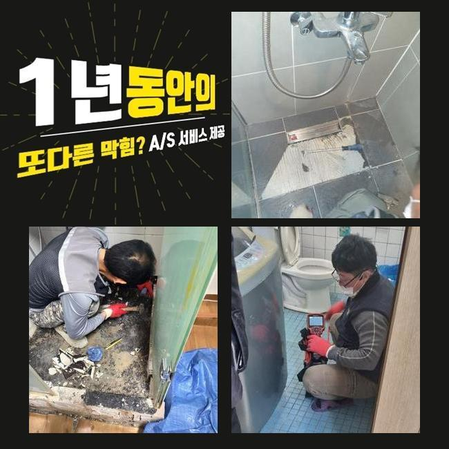
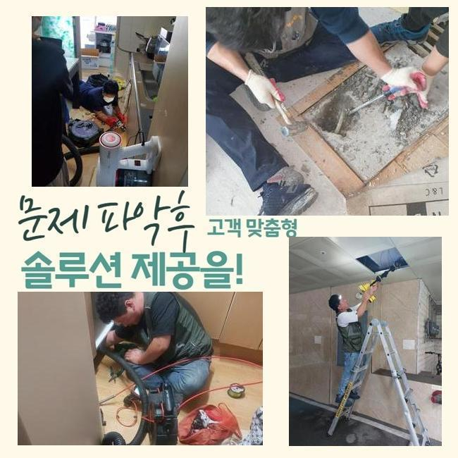
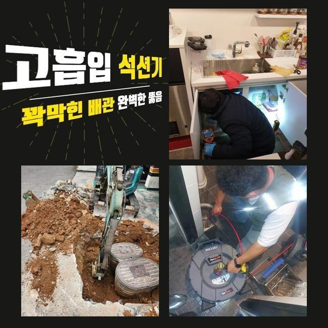
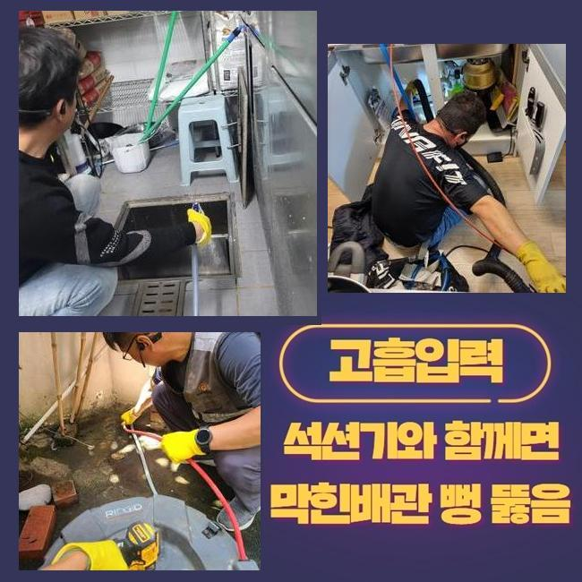
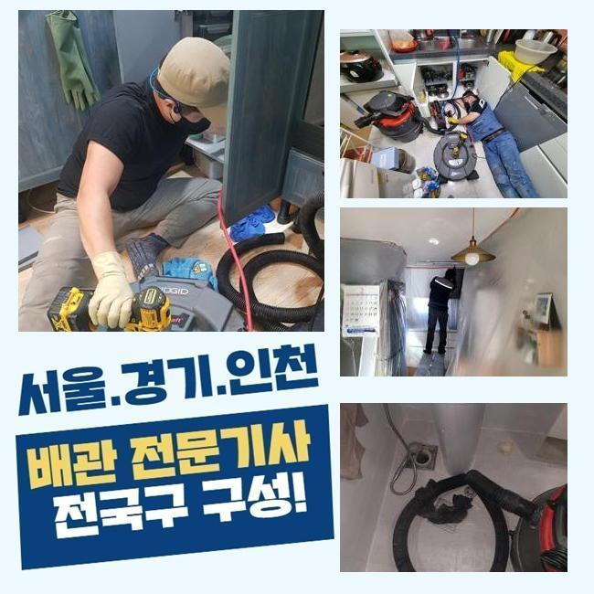
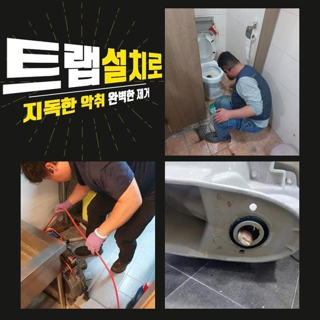
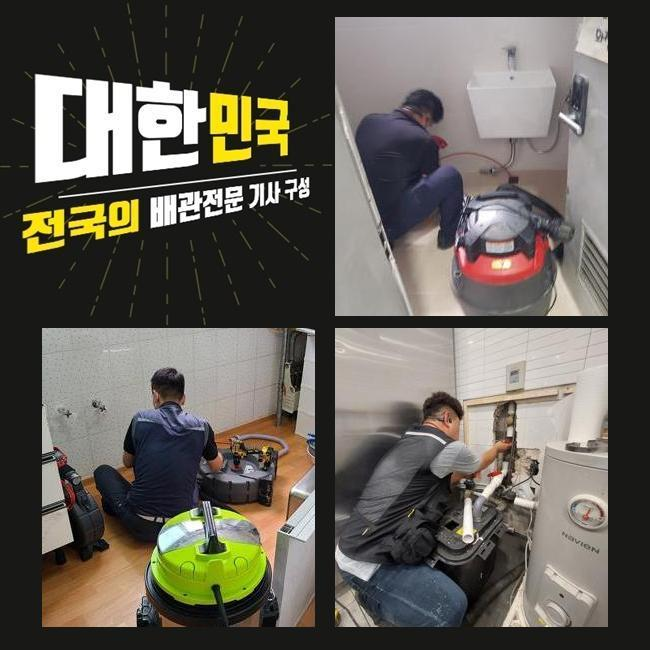

🏠 안양 관양동화장실뚫음 관양동 오수맨홀청소 배관공사
안양 싱크대막힘 전문 시공 후기

📋 작업 개요
- 위치: 안양
- 서비스 유형: 싱크대막힘, 하수구막힘, 배관막힘, 맨홀막힘, 뚫는업체, 배관청소, 고압세척, 설비공사, 악취차단
- 작업 일시: 2025. 2. 28. 0:35
- 업체명: 하수구수사대 (010-5615-2118)
🔍 문제 상황
안양 관양동화장실뚫음 관양동 오수맨홀청소 배관공사
저희팀은 배수관과 관계된 여러가지의 시공을 도맡고 있어요
기술자가 상시대기중에 있으며 의뢰인께서 부닥치신 트러블에 즉각 대처해드려요
이번 글에서는 식당에서 발생한 물막힘 처치 과정을 말씀드리도록 할게요
지난주 연락을 주신 지점은 푸드코트 건물입니다
한 음식점의 배수문이 막혀버리게 되었으며 엎친데 덮친격으로 화장실 배수마저 제대로 안돼 문제가 되는 상황이었습니다
근방에서 근무중이었던 직원이 즉시 내방드렸고 합당한 대책을 행하기로 결정했어요
싱크대의 물막힘과 화장실공간의 고장이 일어난 위치는 백숙 체인점이었어요
싱크대에선 음식찌꺼기의 유입량이 많아 배수관정체가 흔히 생기죠
이래서 식당주인분들을 그것에 대처한 여러가지의 조치를 취하실 때가 많은데요
평상시 조심스럽게 쓰셨더라도 어느날 갑자기 큰 이물이 유입된다면 정체가 생길수 있으므로 주의하셔야 합니다
금번에 방문한 지점은 왜 막힘이 일어났는지 신밀하게 파악하도록 합니다
일단은 주방쪽 시설부터 파악하기로 합니다
한식집은 일반 가정의 주방과 다르게 배수 트렌치의 스케일또한 상당하죠

🔎 원인 분석
💡 전문가 진단: 정밀 진단 장비를 사용하여 슬러지의 고착 여부를 판명하고 타격/세척 작업을 실시했습니다.
그러므로 감당가능한 하수량 역시 증가하게 되죠
그러므로 보통의 가정집의 시험방법을 토대로 공사여부를 정해서는 곤란하고 적절한 수량을 투입시켜 배수가 제대로 되는지 파악해보아야 하겠습니다
이런 공정을 올바르게 안하고 대충 넘어간다면 몇달후에 사태가 재발하기 쉽습니다
배수되는 추이를 확인했고 원활하게 배수처리가 진행되지 않는걸 확인하였어요
천천히 소멸되기는 하였으나 정상적으로 사용을 이어나가기엔 곤란한 형국이었죠
그후에 내시경cctv를 배관에 넣어서 분명하게 정황을 진단하기로 했어요
유분이 포함된 노폐물과 석회물질들이 관로속에 들어찬 상태였죠
관로 안에 혼입되면 안될것들이 누적되어서 고장을 일으킨거죠
이런 부분들에 관하여 하수관에 투입돼면 문제가 될것들에 대하여 설명하는 시간을 가져보도록 할게요
해당 사안을 기억해두셨다가 일상에 이를 적용해볼것을 추천합니다
유분은 수돗물과 만나면 굳게되고 그래서 하수관에 달라붙을 확률이 크죠
그러하기에 반드시 종이류로 처리하고 설거지하는 게 중요해요
거기에 더하여 기름수거통도 습관적으로 활용하는게 좋겠죠
요즘에 즐겨드시는 커피찌꺼기들도 배관정체를 일으킬수 있고요
원두가루는 기름기를 빨아들이는 기질이 존재하여 배관속에서 뒤엉키기 쉽답니다

🔧 작업 과정
그렇기 때문에 일반쓰레기로 분류하여 버리시길 바라요
설거지를 하는도중 잔여물질을 곧장 주방배관에 흘려보내면 배관면에 누증될 여지가 있어요
양념장과 같은것들은 알갱이가 작아서 거름망에 안걸리고 배관쪽으로 이동하기 쉬우므로 따로 버리는게 좋아요
메뉴를 조리하시다가 누적된 전분가루와 같은 성분도 싱크대에 바로 버리시면 떡처럼 변하여 배관정체를 유발하기 쉽습니다
그렇기 때문에 이러한 것들은 필히 분리하여 관로를 안전히 관리하실것을 당부드려요
내시경설비로 심부까지 조사하였더니 공용관로도 정체가 생겼으리라 예측되었고 추가로 검사해보기로 했죠
우선 의뢰인의 식당의 관로 세척을 해야하겠죠
닭백숙요리 전문식당이라 여타 업장들과는 달리 기름기가 다량으로 누증된 상태였고 또다른 잔재들과도 엉켜서 길목이 차단된 형국이었답니다
이것들이 장기간 체류하면서 배수관면에 고착화된 국면이었어요
파쇄용 공구를 써서 본 지점의 1단계 세척공정을 실시하였죠
부품들은 배관의 특성에 맞게끔 다른것으로 바꿔서 사용하기도 하나 통상 쇠로 가공된 체인을 쓰는데요
기다란 노즐부에 카바이드 체인이 결합돼있고 배수관에 밀어넣은뒤에 가동하면 고속으로 회전하면서 누증된 이물질들을 파쇄시키는 기능을 해주죠
통상적으로 분쇄기를 가동시키면 어지간한 물질들을 떨어져나갑니다
하지만 이전 점검을 토대로 여긴 공동 하수도까지 막혔다는 사실을 파악한바가 있는데요
그러한 경우엔 가지배관 정비만으로 근원적인 트러블이 없어지지 않아요
세정된걸로 오인될수 있으나 중앙의 배관이 차단되었다면 결과적으로 또다시 관로가 막혀버릴수 있습니다
세대내의 하수관 소제시공을 끝마친뒤 지하실쪽에 위치해 있는 횡주관로를 진단해 주었답니다
배관내시경을 밀어넣었더니 두껍게 누적된 검정색의 잔재들이 가득하였답니다
수년간 누적된 결과물로 간주되었고 면적도 넓다보니 폐기물도 많아졌던겁니다
이부분을 고압물청소를 통하여 정리하기로 결단했고 2시간30분간 청소를 실시하게 되었네요
메인관까지 플렉스샤프트 공정을 적용하고 의뢰인분의 닭요리집으로 올라가서 배수구 물내림점검과 화장실까지 검점을 단행해보니 과거에 막힌상황이 무색하게 통수가 되어서 말끔하게 소멸되었네요
금번에 처리한 장소는 상당량의 기름성분과 석회물질들이 막힘을 일으켰던 이유였고 지하공간의 횡주관까지 막혀있었기에 더더욱 사태가 심각했어요
해당 문제를 분쇄기기와 물세척공정으로 알맞게 정리하였으며 해결된 결과물을 마주할수 있었어요
수선을 마감하고 차후 일어날수 있는 고장과 의뢰인께서 간과할수 있는 관로보존 방책들을 안내해 드렸답니다


✅ 작업 완료
해당내용에 대해 추가적 궁금증이 있으셔서 꼼꼼하게 다시금 설명드렸죠
작업을 잘못 진행하면 몇달뒤 배수관에 구조적인 결함까지 나타날수 있어요
그렇기에 정확한 시공방식을 적용해서 정비하려는 기본방침이 중요해요
이에 따라 다양한 기기들을 종합하여 수리를 속행해야 된다는걸 강조해 드려요
영업장에서 급작스레 하수관막힘이 생긴다면 정상적인 운영이 어려운 상황에 봉착하겠죠
따라서 약간이라도 문제점이 목격되었다면 지연시키지말고 기술자에게 문의하시길 당부드려요




⚠️ 주방 싱크대 배관 막힘 예방 수칙
- ✅ 기름기가 묻은 식기나 프라이팬은 설거지 전 키친타올로 반드시 기름때를 닦아내세요.
- ✅ 주기적으로 싱크대 개수대에 뜨거운 물을 가득 받아 한 번에 내려 배관 내부 기름을 씻어내세요.
- ✅ 배수구 거름망을 미세한 필터로 사용하시고 음식물 찌꺼기가 틈으로 새어 들지 않게 관리하세요.
- ✅ 베이킹소다와 식초를 뜨거운 물과 함께 일주일에 한 번씩 부어주면 배관 살균과 막힘 예방에 좋습니다.
💡 핵심 정리
- 확실한 장비 작업(내시경 점검 및 샤프트 스케일링)으로 원인을 뿌리 뽑습니다.
- 작업 후 1년 이내에 동일한 부위 재발 시 100% 무상 A/S 서비스를 보장합니다.
- 서울 · 경기 · 인천 전 지역에 24시간 언제든 긴급 출동할 수 있도록 항시 대기 중입니다.
❓ 자주 묻는 질문 (FAQ)
🚨 안양 싱크대막힘 문제로 고민이신가요?
정확한 원인 진단과 확실한 시공으로 재발 없는 해결을 약속드립니다.
24시간 긴급 출동 | 서울 · 경기 · 인천 전지역 | 1년 내 재발 시 무상 A/S